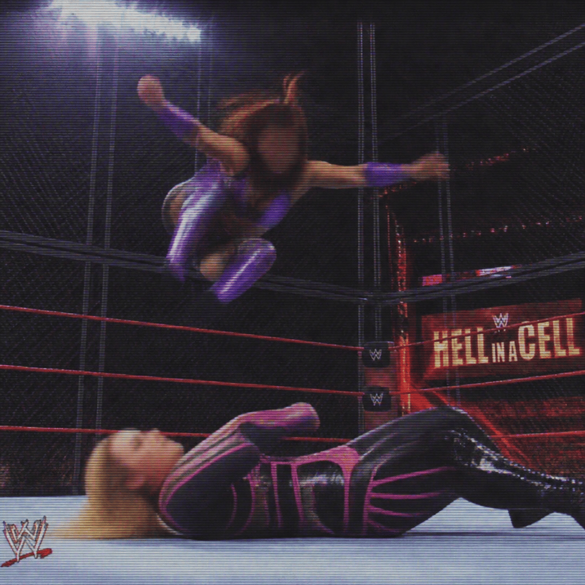

2026/10/25(日)
アベマ・試合結果速報！
○アベマ・ストリート・ファイト！ミチン (12分45秒 ぶっ飛ばし) ナイア・ジャックス●
○アベマ・ラストマン・スタンディング！ローガン・ポール (20分9秒 白い筒) トンガ・ロア●
○アベマ・非公認試合！ジェイド・カーギル (15分23秒 フェイスバスター) アルバ・ファイア●
○ペンタ (11分30秒 ペンタ・ゼロ・ミエド) シェイマス●
○アベマ・ノーDQ戦！中邑真輔 (18分52秒 カーフブランディング) Mini Vikingo●
○アベマ・トライバル・コンバット！ホアキン・ワイルド (24分1秒 スペルバウンド) カーメロ・ヘイズ●
○アベマ・トライバル・コンバット！マキシン・デュプリ (19分35秒 サンセットフリップ) ジュリア●
○アベマ・ヘル・イン・ア・セル！ナタリア (23分44秒 シャープシューター) カイリ・セイン●
○アベマ・トライバル・コンバット！マスター・ワト (17分19秒 ワト・バスター) 真壁刀義●
○アベマ・ラストマン・スタンディング！ナオミ (22分27秒 ダンス・ウィズ・ザ・スターズ) アイビー・ナイル●
○ペンタ (14分56秒 ペンタ・ゼロ・ミエド) 小島聡●
Thank you for Watching !

「(アベマ・ヘル・イン・ア・セル！ナタリア VS カイリ・セイン)」